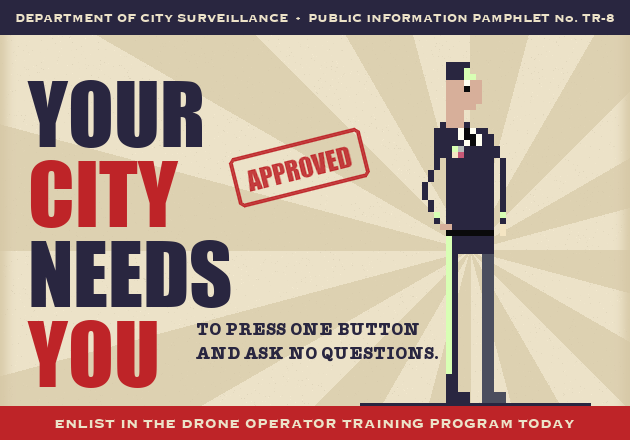
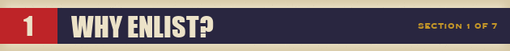
Threats are hiding among us. Some of them wear shirts. Some of them walk. Nearly all of them have legs.
The City Surveillance Network Training Division is looking for brave citizens with one finger and no further questions. As a Drone Operator Trainee you will be issued:
- One (1) drone
- One (1) phone
- One (1) list of suspicious individuals
- Full access to the city's helpful infrastructure: a falling piano, a remote-controlled car, a security door with very loose locks, and a drone with a camera and opinions
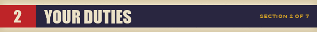
- READ the target card. Memorize the shirt. Faces are not your concern.
- WAIT for the target to enter the HIT ZONE, marked with official city cones.
- PRESS THE BUTTON. That's it. That's the job.
- REPEAT until you graduate.
This free training demo contains 4 missions. Score 800 points to graduate. The full program (12 missions) is still being declassified.
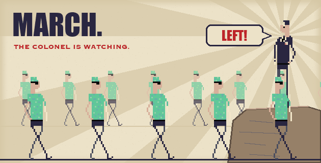
Your fellow trainees already have their sunglasses. The Colonel is very proud of them. The Colonel is watching you next.
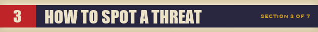
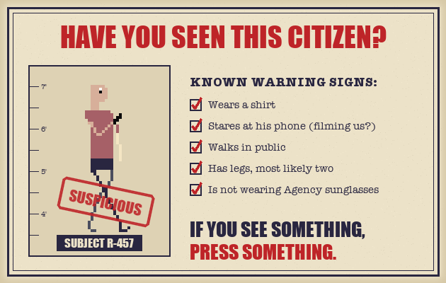
Anyone not wearing Agency sunglasses should be considered suspicious. The Agency's algorithm has never made a mistake. If the card says it's them, it's them. If it's not them, see Section 5.

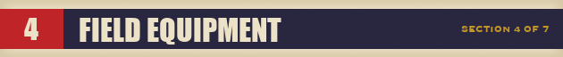
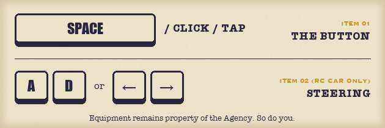
- Space / Click / Tap — the button
- A / D or ← / → — steer the RC car
- Mash Space — break locks, confirm your identity
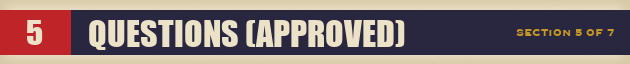
Q: How do I know the target is really a threat?
A: They are on the card.
Q: What if I press the button at the wrong time?
A: The system will review your performance. Then the system will review you.
Q: Is my drone okay?
A: Your drone is fine. Your drone is always fine, until it isn't.
Q: Why is there an ad in my training?
A: The Agency thanks its sponsors.

Q: Can I leave the program?
A: Fail too often and the system may decide that you are the threat. So, technically, yes.
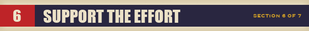
Agent TR8N1 is free. Patriotic citizens may leave a donation when they download, or buy the Agency a coffee on Ko-fi. Every coffee keeps a drone in the air. Every drone keeps an eye on you.
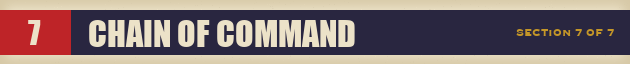
Director & Programmer: Gold
Artist: Luis Ortega
Sound effects: Carlos